Basic Help
- Content
- 1. Introduction
- 2. Configuration files
- 3. Interface
-
- 3.1. Menu bar
-
- 3.1.1. "Files"
- 3.1.2. "Show"
- 3.1.3. "Downloads"
- 3.1.4. "Tools"
- 3.1.7. "Help"
- 3.2. Button toolbar
AWGG — is a project started by Cuban programmer Reinier Romero Mir (nenirey@gmail.com), as a frontend of wget (http://www.gnu.org/software/wget/).
AWGG is a cross-platform (both GNU/Linux and Windows) download manager, supporting http/s ftp/s protocols. The Windows version comes installed with wget (engine). Other engines can be installed manually.
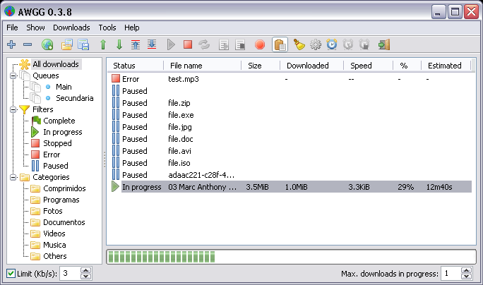
1. Introduction
On the program download page you can see several versions which are available to download. First, you must choose which operating system (Windows or Linux) and whether 32 or 64 bit. After that you can select the type of distribution. For Windows there is an setup .zip or an portable .zip (which is the so-called portable version).
For Linux there are versions for most popular Linux distributions and desktop environments. You can download compiled deb packages for Debian-based distributions (e.g, Ubuntu). Also available is a portable version of the archive tar.bz2, it is the same source from which you can build the program yourself. For various DE there are versions, based on GTK2 toolkit, and versions for KDE, based on Qt. I must note that the program is not yet available from the repositories.
On the first launch AWGG will ask your language, and set it for the interface. AWGG is translated into 3 languages so far. The language can be changed in the menu via "Tools → Configuration → Language". Also AWGG uses the current system theme. It looks like this (in Puppy Linux):
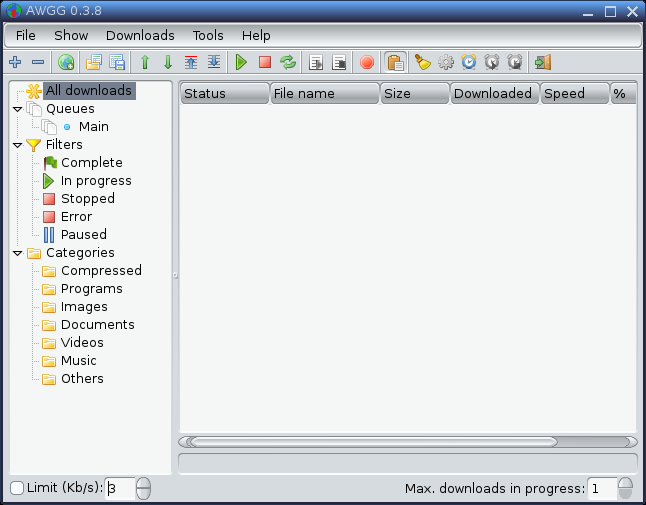
As can be seen from the figure, there are on download list, a tree view, a progress bar and a command out bar that is a log viewer (it shows the output from the download engine).
2. Сonfiguration files
AWGG keeps settings in configuration files in the program directory or in the user's home directory. The main files are:
awgg.ini — all the main program settings
awgg.dat — downloads data

3.1. Menu bar
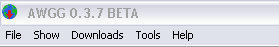
The Menu Bar provides access to all the features of AWGG. But do not forget that the majority of actions can be performed in other way: by using buttons on the toolbar.
3.1.1. "Files"
This menu contains almost all the actions that can be made on files. Please consider all the items:
New download.... With this item, AWGG add a download link to the download list and places it in a queue, selected in the New download window.
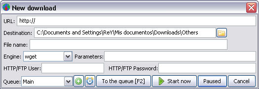
URL: — here is the url to the download file.
Destination: — the folder, on which the download store the output file.
File Name: — the name of download output file, this it is obtained automatically of the URL but you can specify manually, if one leaves in white the name it will be given by the engine.
Engine: — this is the engine that was use to download the file.
Parameters: — here you can pass command parameters to the engine for this specific download.
HTTP/FTP User and Password: — some URls requires user and password to allow the access, it can specify them here.
Queue: — the queue (like a group) in that the download will be contained.
[+] button — add new queue to queue list, you can add the download to it.
[clock] button — click here to schedule configuration of this queue.
[To the queue F2] button — this button add the download to the end of selected queue and start it ( the queue).
[Start now] button — this button add the download to the end of selected queue and start it (the download).
[Paused] button — this button add the download to the end of selected queue in pause status (the download).
[Cancel] button — this button cancel any operation.
Delete download This item ask you for delete the dowloads selected.
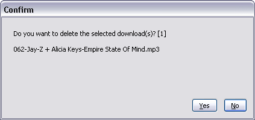
Delete from disk This item ask you for delete the dowloads selected and the download file fron the disk.
New site grabber... This item launch the Site grabber wizzard.
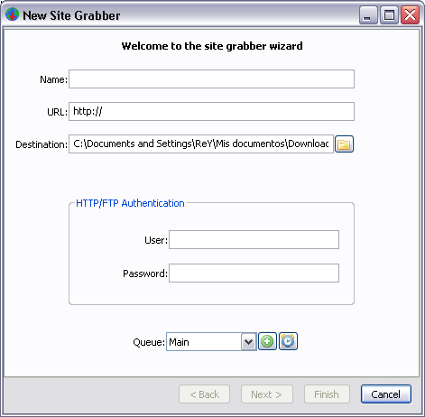
This window is like the New download windows except for the engine option and the buttons, you must to type a name in Name: text edit before continue the assistent then click in [Button] Next >... and then setting the new page window like this:
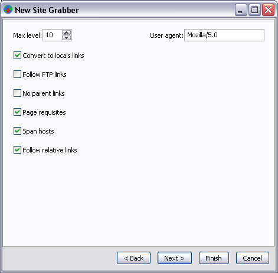
You can press [Finish] button in here to add this site grabber to the download queue or continue to more advanced options in the wizzard.
Import list of downloads This item browse for a text file with a list of downloads links, the links most by placed one per line.
Export list of downloads This item make the inverse operation of the first, save the downloads list to a text file.
Exit This item terminate the program execution, the window close button send it to the systray.
3.1.2."Show"
There are some commands in this group with which you can configure what information is show in AWGG
Columns, this show/hide all columns information of the download list.
Command out, this show/hide a log panel with the ouput of current selected download.
Show gridlines, this show/hide a grid in the download list, (this no cause effect in qt version).
Show downloads icons in systray, this active a systray icon for all downloads in progress.
Show treeview panel, this show/hide the tree view panel in the left side of the main window.
Drop box, this active a drop zone to drag links from the browser.
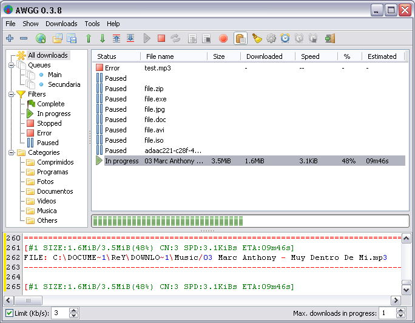
3.1.3. "Downloads"
First item is Select all, this item select all downloads for the current filter status, category or queue.
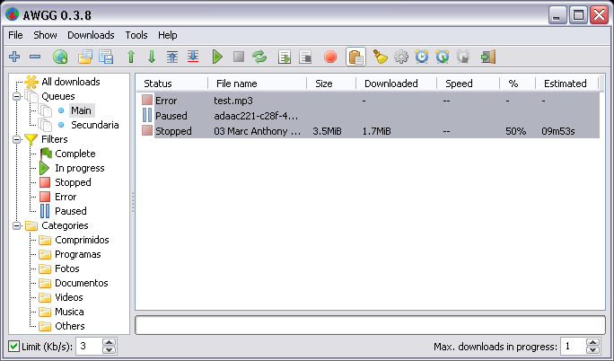
Second item is Unselect all, this item make the opose to the first item.
Third item is Start all, this item start all downloads in all queues.
Fourth item is Stop all, this item make the opose to the first item.
Fifth item Start queue, this item start the selected queue.
Sixth item is Stop queue, this item stop the selected queue.
Seventh item is Restart all now, this item restart all download to start from 0 and all download are started, note that this cause a lost off current downloads progress.
Eighth item is Restart all latter, this item restart all download to start from 0 and set all download to pause status, note that this cause a lost off current downloads progress.
3.1.4. "Tools"
This group manages the configuration and scheduler options.
First item is Configuration this show the configuration window:
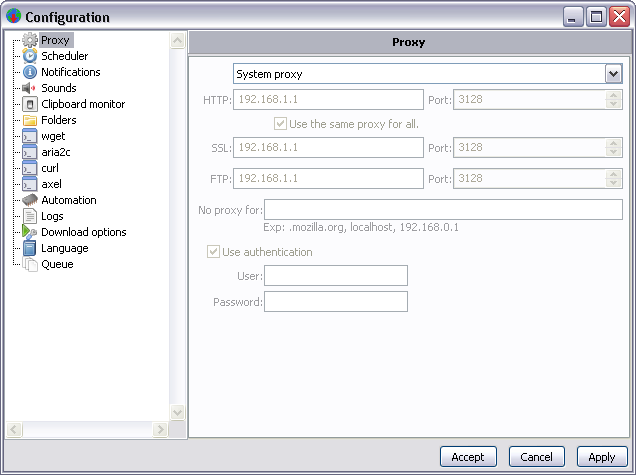
Second item is Scheduler this access to the direct scheduler configuraion option window:
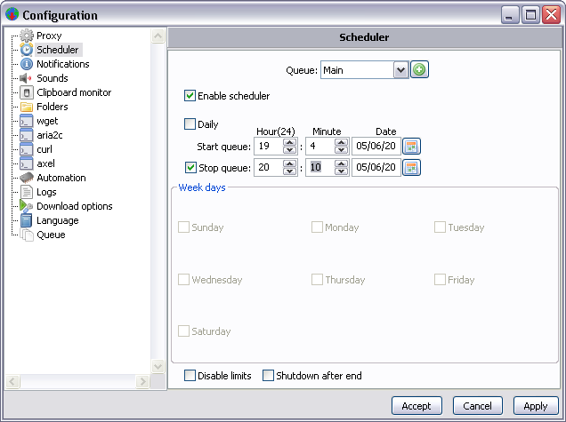
The scheduler setting affect only the queue selected in the queue list box, so you can set different schedule times for all queues.Third item is Notifications this show the configuration window: